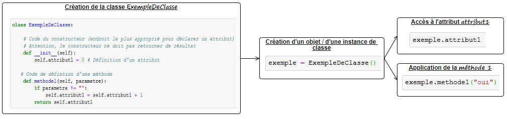

Poser les fondations
“En python, tout est objet” : Comment ça ?
Cette formation d’initiation à python dans le cadre de la manipulation et du traitement des données n’a pas pour vocation à présenter en détail les concepts de la programmation orientée objet. Il semble pourtant difficile d’occulter totalement les notions de classes et d’objets sans être confronté rapidement à des incompréhensions notamment lors de l’utilisation de packages.
La Programmation Orientée Objet (POO) définit une organisation du programme qui consiste à concevoir des classes qui correspondent à des modèles d’objets. En POO, programmer revient donc à :
- décrire, au même endroit, des classes d’objets, leur structure et leur comportement
- puis à instancier ces classes pour créer des objets. On parle d’instance pour désigner l’objet issu d’une classe.
Une instance encapsule alors des attributs et des méthodes.
- Un attribut est une variable attachée à un objet. Par exemple, le nom et le prénom peuvent correspondre aux attributs définis au sein d’une classe Personne
- Une méthode est une fonction définie dans une classe. Elle dispose d’un accès privilégié aux attributs de la classe elle-même. Sa syntaxe ressemble à celle d’une fonction : la seule différence est le premier paramètre, communément appelé self, qui correspond invariablement à l’objet en cours. Une méthode sert à retourner les valeurs à l’intérieur de l’objet et/ou à les modifier.
Illustrons ces différents concepts avec le schéma suivant :

Ainsi, en python, tout est un objet : une chaîne, un entier, un dictionnaire, une liste, une fonction notamment sont des objets.
La syntaxe
Quels objets en python ?
Lecture, écriture et fermeture des fichiers
Le principe des packages
L’ensemble des commandes indiquées sur ce site sont exécutables au sein d’un notebook (ou dans un éditeur intégré à un IDE tel que Spyder).